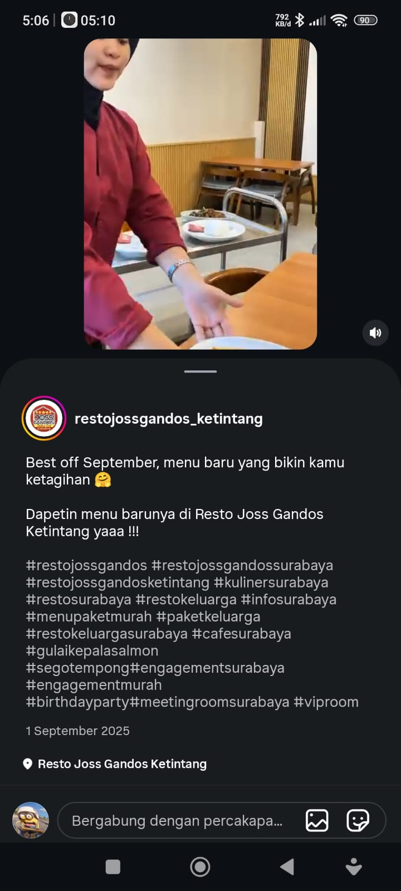

WELCOME TO MY PORTFOLIO
Faza Fahrani PutrantoDiscover my portfolio
Selamat datang di website portofolio saya. Melalui website ini, saya ingin mamperkenalkan diri serta berbagi pengalaman, serta hasil kerja saya.
Tentang saya
WELCOME TO MY PORTFOLIO
Faza Fahrani PutrantoSelamat datang di website portofolio saya. Melalui website ini, saya ingin mamperkenalkan diri serta berbagi pengalaman, serta hasil kerja saya.
Tentang saya
Saat ini sedang menempuh pendidikan D3 Teknik Komputer di Politeknik Negeri Jember. Memiliki ketertarikan pada teknologi informasi dan media digital. Mampu mengoperasikan komputer, mengelola dokumen, serta memiliki sikap teliti, bertanggung jawab, dan mampu bekerja sama dalam tim.
D3 Teknik Komputer
2026-sekarang
2023-2026
2020-2023
2014-2020
Usaha di bidang Food and Beverage (F&B)
Membantu kegiatan pemasaran digital, pengelolaan media sosial, dan pembuatan konten promosi produk.
Contoh penulisan caption untuk promosi.

Email: e32262030@student.polije.ac.id
Linkedin: Kunjungi profil Linkedin saya